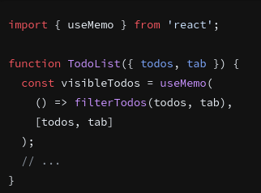

useMemo
Fonte: useMemo - React
useMemo é um React Hook que permite armazenar em cache o resultado de um cálculo entre re-renderizações.
const cachedValue = useMemo(calculateValue, dependencies)
Referência
useMemo(calculateValue, dependencies)
Chame useMemo no nível superior do seu componente para armazenar em cache um cálculo entre re-renderizações:

Parâmetros
- calculateValue: a função que calcula o valor que você deseja armazenar em cache. Deve ser puro, não deve
aceitar argumentos e deve retornar um valor de qualquer tipo. O React chamará sua função durante a renderização
inicial. Nas próximas renderizações, o React retornará o mesmo valor novamente se dependenciesnão tiver mudado
desde a última renderização. Caso contrário, ele chamará calculateValue, retornará seu resultado e o armazenará
para que possa ser reutilizado posteriormente.
-
dependencies: a lista de todos os valores reativos referenciados dentro do calculateValuecódigo. Os valores
reativos incluem adereços, estado e todas as variáveis e funções declaradas diretamente dentro do corpo do seu
componente. Se o seu linter estiver configurado para React , ele verificará se cada valor reativo está
especificado corretamente como uma dependência. A lista de dependências deve ter um número constante de itens e
ser escrita inline como [dep1, dep2, dep3]. O React irá comparar cada dependência com seu valor anterior usando
a Object.iscomparação.
Devoluções
Na renderização inicial, useMemoretorna o resultado da chamada calculateValuesem argumentos.
Durante as próximas renderizações, ele retornará um valor já armazenado da última renderização (se as dependências
não tiverem sido alteradas) ou chamará calculateValuenovamente e retornará o resultado calculateValueretornado.